2025 · SenseOn
SenseOn Rebrand
From cybersecurity standard to cybersecurity standout
About senseon
SenseOn is an advanced cybersecurity platform that leverages AI to detect, respond to, and prevent threats across digital environments. Their technology is powerful, precise, and trusted by enterprises, but their brand and digital presence were no longer reflecting the intelligence or innovation behind the product.
The problem
The previous branding felt dated, cluttered, inconsistent, and lacked a clear visual or emotional identity. It didn’t communicate the sophistication or value of SenseOn’s product. More critically, it wasn’t converting, creating friction in both the sales journey and overall user trust.
My role
As the co-lead designer on this rebrand initiative, I owned the brand audit, strategy planning, visual direction, system design, and rollout across key assets, from website and UI components to marketing templates and event collateral. I collaborated closely with product, marketing, and leadership stakeholders, and partnered with an external design collaborator to bring the final experience to life.
Challenges
- Creating a brand system that aligned with cybersecurity, but that did not blend in with the competition.
- Aligning product UI and brand visuals for a seamless user experience.
- Launching the redesigned website in time for an important event (3 months time).
Results
The rebrand wasn’t just a visual polish, it was strategic design with measurable impact.
- >90% of surveyed users described the new brand as a "significant improvement" and said they would "continue in the buying cycle"
- 60% increase in website conversion rate within 1 quarter
- 4x higher paid ad conversion rate
- Go-to-market assets that once took days now took hours thanks to new templates.
-
Discovery
Market research, brand audit, defining the DNA.
-
Implementing the visual system
Logo, colour, typography, layout, imagery.
-
Building the assets
Website, marketing collateral, product alignment.
-
Rolling out the new brand
Internal reveal and external launch at InfoSec.
Discovery
Market research
I started by deeply analysing the cybersecurity landscape: what our competitors were doing visually, how they communicated trust, and where they failed to stand out. What became clear was that a lot of cybersecurity companies were using dark themes and imagery that recalled technical expertise and professionalism, but also fear and dystopian futures.
This already gave us an idea: What if, instead of focusing on the problems and its negativity, we focused on the solution we offer, and the positive outcomes it delivers?
Cybersecurity brands are mainly focussed around fearful and dark themes
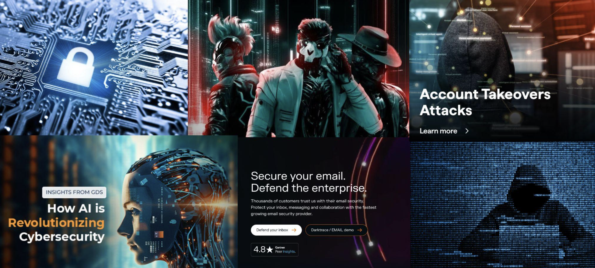
Brand audit
I also reviewed our own brand and how it was deployed across multiple touchpoints. This outlined once more the inconsistency and the consequential lack of professionalism as missed opportunities.
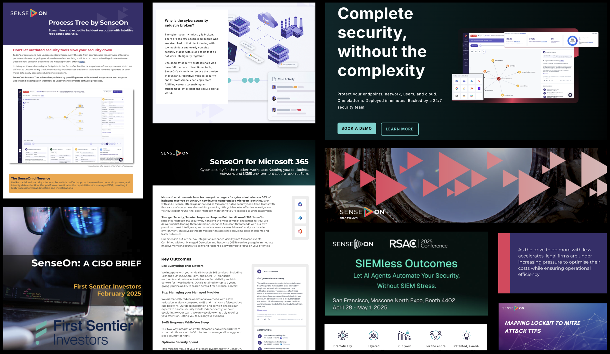
Defining our dna
Next, I knew that we needed some guidelines to guide us for the rest of the process. Who are we? What are our strengths? How do we want to be perceived?
To define that, I reviewed recordings with current customers to see which positive words they used to describe us, and ran an internal survey with stakeholders.
As a result, we established five brand pillars: Bold, Impactful, Playful, Technical, Disruptive. These weren’t just words; they became our decision-making North Star.
-
01
Bold
-
02
Impactful
-
03
Playful
-
04
Technical
-
05
Disruptive
Concept exploration
Based on the DNA defined, I, together with other 2 designers, developed three brand directions. For each of them we created a moodboard, and some examples of how they would look on social media, or on collateral, or on a website page.
- V1: The Serious Contender: dark and technical, aligned with existing industry standards. This direction used a dark theme with neon colours and typical imagery of cybersecurity.
- V2: The Human Touch: clean, minimal, and emotionally accessible. Using hand-drawn iconography and rounded shapes, this direction mainly focused on the human and playful aspect of SenseOn.
- V3: The Game Changer: bold, disruptive, and design-led. Using unexpected shapes and colour combinations, this direction wants to be a show stopper that grabs the attention to show how SenseOn is different from the crowd.
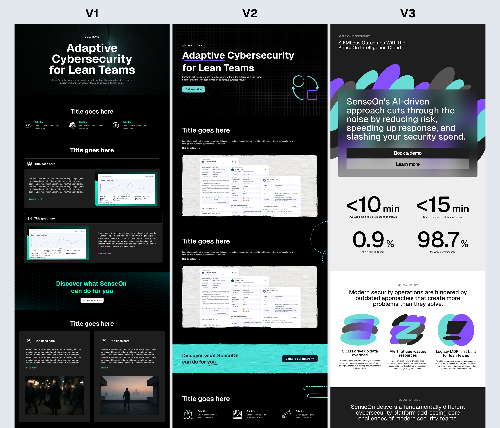
User testing & iterating
After testing through a survey with internal stakeholders and external users, the third version appeared to be the winner. However, there were also elements from V1 and V2 that we decided to incorporate in it, because of the positive feedback we gathered on them.
We kept iterating the moodboards and designs, and this iterative process grounded our creative decisions in user perception and validated the impact of our new visual direction.
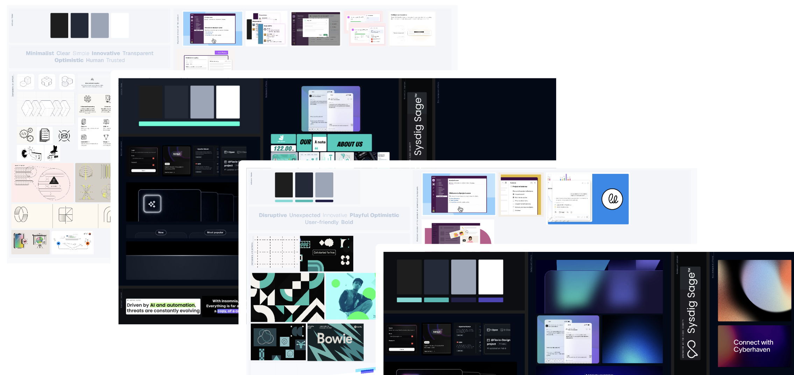
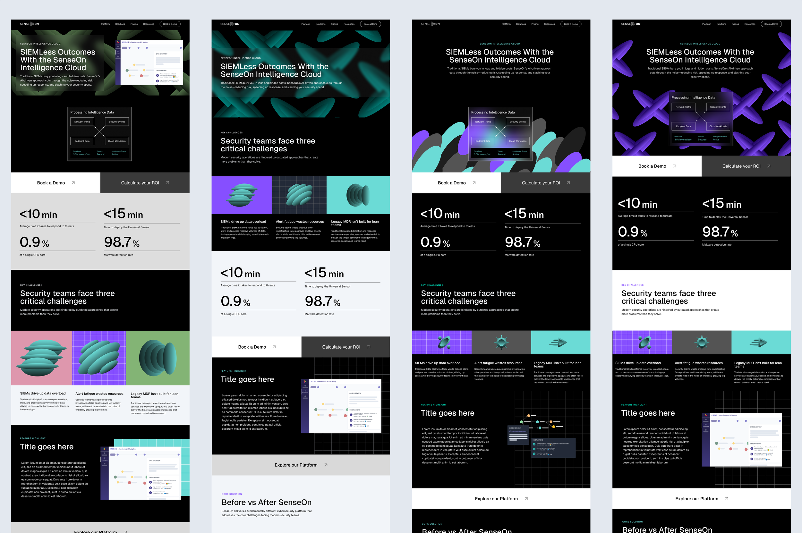
Implementing the visual system
We locked in an art direction that balanced clarity and confidence: an identity that felt at once intelligent, creative, and credible. We created a marketing design system in Figma that contained all the components and the rationale behind them.
Logo
We simplified and modernised our logo to reflect precision and minimalism: monotone, digital-first, and instantly recognisable.
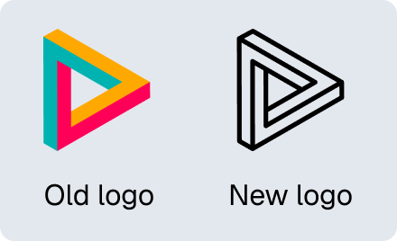
Colour palette
We left behind red-alert aesthetics, and competing colours that fought each other instead of working together.
We chose a deliberately unexpected palette that sets us apart while maintaining professional credibility:
- Foundation: Clean black, grey, and white for clarity and focus. Instead of focussing on dark only, we play with white and grey to balance them and provide a friendlier tone, while still looking professional
- Intelligence: Purple and teal accents that match the accent colours also used in the platform
- Character: Green, pink, and blue (in very small amounts) that add warmth, dynamism, boldness and unexpected touches of optimism without sacrificing authority
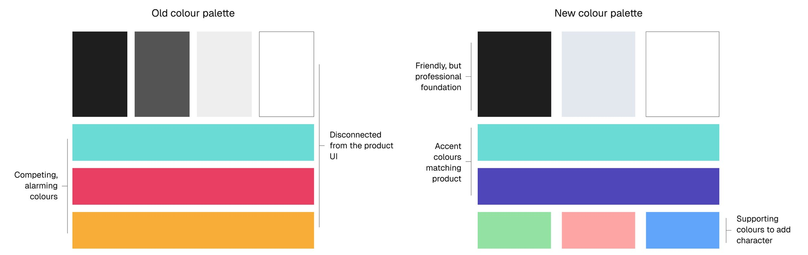
Typography
Switched from Montserrat to Geist, a more refined, modern font with a technical DNA. Used in conjunction with Inter (in the platform), this created strong alignment across brand and product.
Aa Bb Cc
0123456789 · @ & % ?
Aa Bb Cc
0123456789 · @ & % ?
Layout & components
Great security requires both structure and adaptability. Rich, left-aligned layouts that communicate control and organisation, punctuated by strategically centred moments that demand attention. Generous white space creates breathing room, essential when communicating complex security concepts without overwhelming our audience.
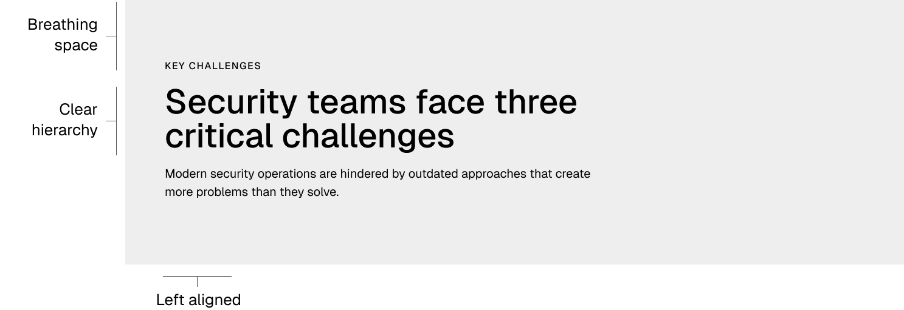
Imagery
We flipped traditional cybersecurity tropes. Instead of fear-based visuals, we focused on solutions:
- Geometric shapes: Clean diagonal lines, structured squares, and purposeful angles that communicate professionalism, order, and systematic thinking; the visual language of controlled intelligence.
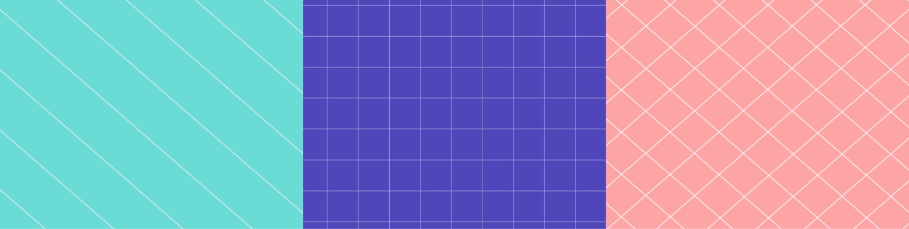
- 3D abstract elements: Dynamic, tear-shaped forms that represent SenseOn's nervous system: constantly alert, perpetually sensing, always ready to respond. Their fluid design embodies the flexibility and responsiveness that define how we operate. These modular elements adapt to any context while reinforcing our core message of intelligent sensitivity. The 3D depth suggests we don't just observe the surface, we understand what lies beneath.
- Simplified UI moments: Strategic glimpses of our platform that focus purely on key insights: graphs, data visualisations, and interface elements stripped of surrounding context. We bring these elements to life with subtle and elegant animations that guide users through the narrative.
Building the assets
The website
Most of our effort was focused on our main digital presence: the website. Over the years, it had become very complicated and, aesthetically, no longer pleasing. This rebranding allowed us to refresh it and to simplify its content too.
Working closely in Figma with an external designer, we developed high-fidelity designs for the new, simplified website.
Real-time collaboration and internal reviews led to rapid iteration and refinement.
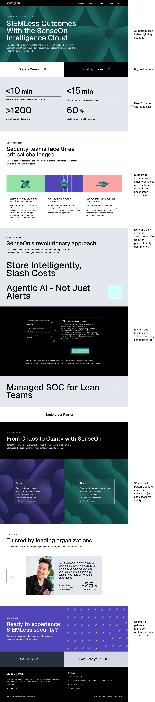
All pages were designed and optimised for every breakpoint, from mobile to large desktop screens. Scroll inside the mockups below to explore the platform page on a laptop and on a phone.
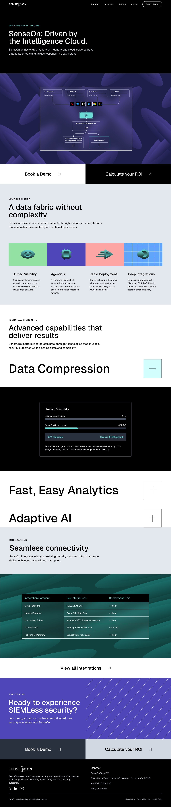
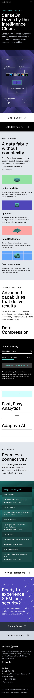
The marketing collaterals
We expanded the system into marketing templates, social media assets, and event visuals, ensuring a consistent experience everywhere the brand showed up.
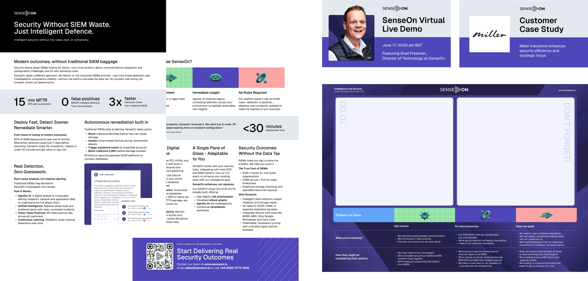
Consistency between product & marketing
One of the goals of this project was to better align the marketing and the product UI designs. Because of this, we made small changes to the product UI too:
- we updated the login page to incorporate some of the 3D shapes
- we made sure that the dark mode (that was being developed) was aligned with the colours used in marketing (for example, using teal as accent colour).
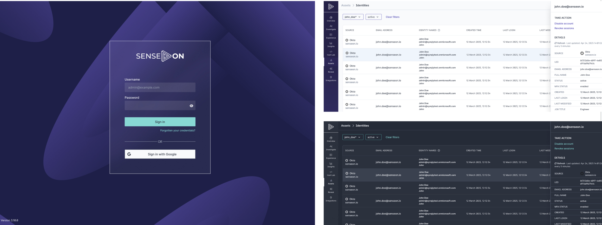
Rolling out the new brand
The internal reveal
We used one of the weekly company meetings to present the new brand and its rationale internally. Thanks to the crafted presentation and the continuous sharing of progress, the rebranding was welcomed with excitement.
The rollout
We used one of the main events (InfoSec) to roll out the new brand externally. We made sure that the new website was going live at the same time. Additionally, we also aligned to the new branding:
- the booth
- printed marketing material used at the event
- slides for customer-facing functions
- landing pages
As a result, the brand came across as consistent and professional.
Results
- The brand redesign delivered measurable improvements in engagement, conversion, and operational efficiency, strengthening SenseOn’s market presence and internal execution:
- Significant lift in website conversions Following the rebrand launch, the website experienced a 60 %+ increase in conversion rate within one quarter, demonstrating clearer messaging, stronger value positioning, and improved user experience.
- Higher performance in paid acquisition Paid advertising campaigns saw a 4× higher conversion rate, reflecting stronger creative resonance and improved alignment between brand perception and ad messaging.
- Strong user sentiment and validation In post-launch user surveys, over 90 % of respondents described the new brand as a “significant improvement” and indicated they would “continue in the buying cycle,” underscoring enhanced trust and clarity in the refreshed identity.
- Faster creation of go-to-market assets The introduction of redesigned templates and guidelines transformed internal workflows: what once took days to create now takes hours, enabling faster campaign execution and better alignment across marketing teams.
Testimonials
This sets the conditions for SenseOn to begin to realise its potential. Dave Atkinson, CEO